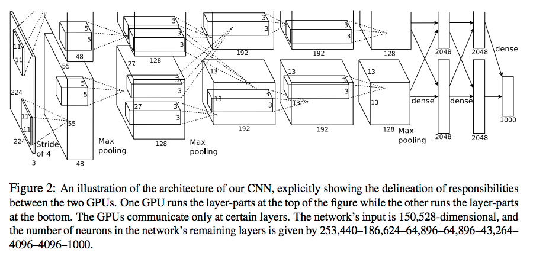
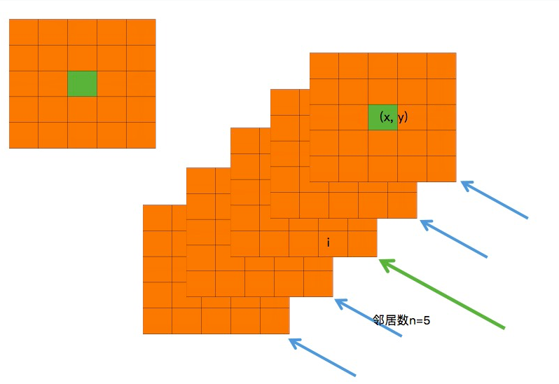

论文：ImageNet Classification with Deep Convolutional Neural Networks
文中提到的模型在ImageNet LSVRC-2010 的ImageNet数据集（高分辨率图像1.2million，共1000个类别）上top-1错误率37.5%，top-5错误率17.0%，AlexNet 有60million个参数，650,000个神经元，五层卷积加三层全连接层，最后softmax输出1000个通道对应1000个类别，用了 dropout 来降低 fc 层过拟合。模型的变体是LSVRC-2012的冠军，top-5错误率15.3%。
论文实验表示深度会对网络性能有影响。
网络结构
结构图里分上下两个部分，分别对应两个GPU中的计算，每块GPU中网络的结构类似。网络共 8 层，包括 5 层卷积，3 层全连接。

卷积层1：输入224 x 224 x 3 的图像，kernel size $ = 11 \times 11 \times 3$，stride = 4，padding = 0，卷机核数量即输出channel数为 96，所以
| 层数 | 输入shape | 操作 | 输出shape | 操作 | 输出shape |
|---|---|---|---|---|---|
| 卷积层1 | 224 x 224 x 3 (图像) | 卷积: kernel size = 11 x 11 x 3 kernel num = 96 stride = 4 padding = 0 |
55 x 55 x 96 | 1.Local Response Normalized 2.MaxPooling(size=(3x3),stride=2,padding=0) |
27 x 27 x 96 |
| 卷积层2 | 27 x 27 x 96 | 卷积: kernel size = 5 x 5 x 96 kernel num = 256 stride = 1 padding = 2 |
27 x 27 x 256 | 1.Local Response Normalized 2.MaxPooling(size=(3x3),stride=2,padding=0) |
13 x 13 x 256 |
| 卷积层3 | 13 x 13 x 256 | 卷积: kernel size = 3 x 3 x 256 kernel num = 384 stride = 1 padding = 1 |
13 x 13 x 384 | - | - |
| 卷积层4 | 13 x 13 x 384 | 卷积: kernel size = 3 x 3 x 384 kernel num = 384 stride = 1 padding = 1 |
13 x 13 x 384 | - | - |
| 卷积层5 | 13 x 13 x 384 | 卷积: kernel size = 3 x 3 x 384 kernel num = 256 stride = 1 padding = 1 |
13 x 13 x 256 | MaxPooling(size=(3x3),stride=2,padding=0) | 6 x 6 x 256 |
| FC层678 | 6 x 6 x 256 | 67层神经元个数4096,8层softmax 1000 RELU Dropout |
1 x 1000 | - | - |
卷积操作shape计算：
- 输出大小： $output = \frac{ input + 2 * padding - kernel_size } {stride} + 1$
- 卷积后大小不变：$kernel_size = 2 \times padding + 1, stride = 1$
- 卷积后大小变为原来的一半 ( MaxPooling ) ：$kernel_size=3\times 3, stride=2，padding=0$
ReLU (Rectified Linear Unit)
常用激活函数
sigmoid
tanh
ReLU
计算梯度时更快。
Local Response Normalization
在用激活函数将神经元的输出做非线性映射时，tanh 和 sigmoid 会映射到一个范围内，但ReLU的值域没有区间，所以需要对ReLU的结果进行归一化，即Local Response Normalization:
$a_{x,y}^i$ 表示ReLU第i 个kernel的(x, y) 位置的输出，n 表示 $a_{x,y}^i$ 的邻居数，即有几个kenel和$a_{x,y}^i$所属的kenel相邻，N 表示 Kernel 总个数。LRN 的计算就是先找到与 $a_{x,y}^i$ 相邻的 n 个kernel map上对应的(x,y)位置的值，即$a_{x,y}^j$，把这些值平方再求和，然后乘系数 $\alpha$，加 k，求$\beta$ 次幂，作为归一化的分母:
